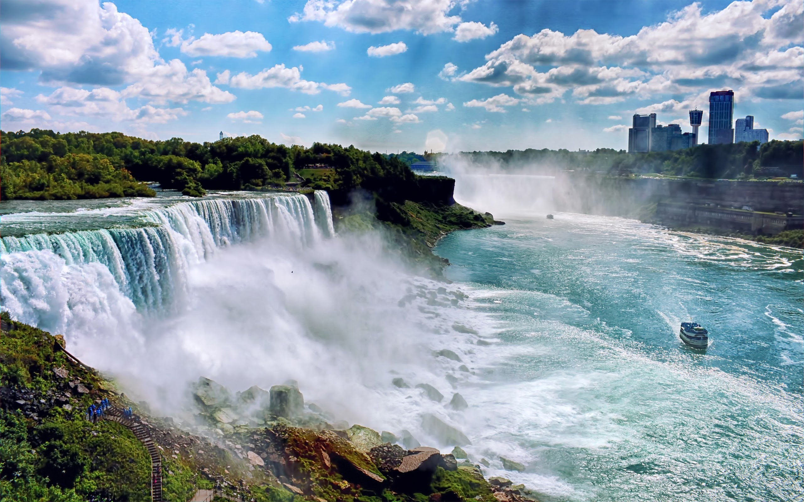

Niagara Falls is the collective name for three waterfalls that straddle the international border between the Canadian province Ontario and the American state of New York. They form the southern end of the Niagara Gorge.
The Niagara River, as is the entire Great Lakes Basin of which the river is an integral part, is a legacy of the last Ice Age. 18,000 years ago southern Ontario was covered by ice sheets 2-3 kilometers thick. As they advanced southward the ice sheets gouged out the basins of the Great Lakes. Then as they melted northward for the last time they released vast quantities of meltwater into these basins. Our water is “fossil water”; less than one percent of it is renewable on an annual basis, the rest leftover from the ice sheets.

I am making changes in this code